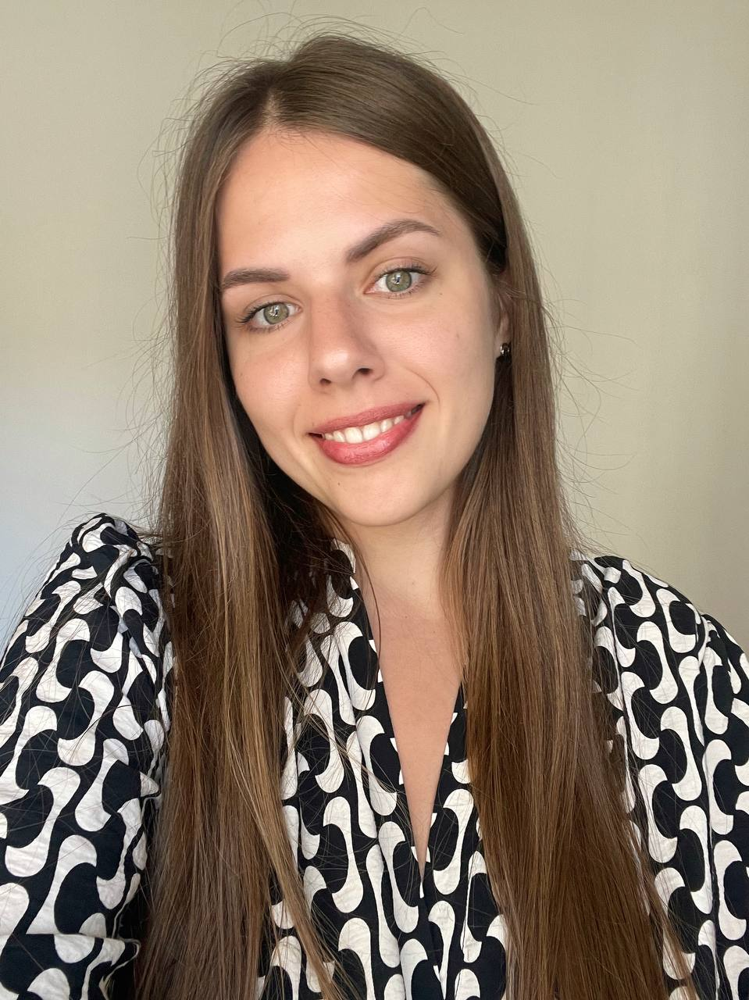

Summary
 Manual QA with 2 years of experience in game dev. I am currently working in a feature team (mobile slots - iOS, Android), engaged in testing features from the idea to the release in prod. There is also a strive to develop in the direction of automation. Now based in Poland, Warsaw. I will be glad to join your team.Tools
JIRA, TestRail, Postman, Splunk, Kibana, Snowflake, Jenkins, VS Code, GitHub, DevTools, AVA, Teak, DPH, AppCenter, GSCP, HelpShift, BrowserStack, Figma, Miro, Confluence, Notion.Work experience
QA Engineer (Feature Team)
Custom Games Studio: March 2023 – present
Project description: social slot games
KEY RESPONSIBILITIES:
- Writing and maintaining test documentation, feature specs, requirements analysis;
- Frontend/Backend testing;
- Functional (web/mobile) testing, release, post-release verification, regression/smoke, cross-browser/cross-platform testing, business analytics testing, A/B testing and etc.;
- Analysis of logs;
- Investigating and reporting bugs;
- Collaborate with other teams and specialists (Frontend and Backend developers, PM, Technical artists and etc.);
- Active participation in refinement, retrospective, sprint review, sprint planning sessions and etc.;
- Responsible for product development at all stages, starting from design to production;
- Preparing and conducting playtests.